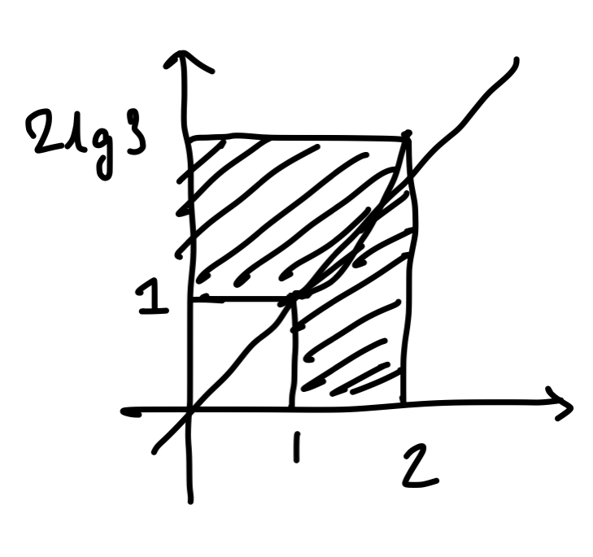

The JEE never fails to amaze
Posted on Mon 19 September 2022 in Mathematics
I promised I wouldn't look at the JEE 2022 paper, but couldn't help sneaking a peek. As always, the professors currently making life difficult occasionally get a chance to make the life of all of India's students difficult, and they never cease to amaze.
Welp, this will be a short one. Let's cut to the chase!
The greatest integer less than or equal to $$\int_1^2 \log_2(x^3 + 1) dx + \int_1^{\log_2 9} (2^x - 1)^{1/3} dx$$ is _
Looks fearsome, but peek between the lines and a pattern seems to emerge if you look at the limits of integration and the functions themselves.
$$\begin{align} y &= \log_2 (x^3 + 1) \\ 2^y &= x^3 + 1 \\ (2^y - 1)^{1/3} &= x \end{align}$$
Okay, so both the functions are bijections in the domains of integration, and are inverses of each other. The limits of integration are also inverses! This suggests we should have a closer look at expressions of the form
$$\int_a^b f(x) dx + \int_{f^{-1}(a)}^{f^{-1}(b)} f^{-1}(x) dx$$
See a pattern? Try graphing out what these functions will look like.
Mouseover/tap for the answerSince they're perfect inverses, and the inverse domains also match, these functions will form a rectangle on the cartesian plane, and the integration will be a 'cutout' of this rectangle.  Therefore, the answer is $4\log_2(3) - 1 \approx 5.3 > 5$.
Hint: Integrate without integrating :)